Nach den Spielabsagen am vergangenen Wochenende rollte der Ball endlich wieder unter freiem Himmel. Das Testspiel beim Thüringenligisten SV Blau-Weiß Bad Frankenhausen endete für unseren SCH mit einem 2:2 – doch das Ergebnis rückte an diesem Tag fast in den Hintergrund. Viel wichtiger war es, wieder Wettkampfrhythmus aufzunehmen, Abläufe zu testen und Spielminuten auf großem Platz zu sammeln.
Ein besonderer Dank gilt den Gastgebern aus Bad Frankenhausen. Trotz eigener Anreise aus dem Trainingslager in Heiligenstadt und großer Mühen rund um die Platzfreigabe machten sie diesen Test möglich. Fleißige Helfer befreiten den Kunstrasen vom Schnee – ein starkes Zeichen für gelebte Fußballgemeinschaft.
Starker Beginn der Seipel-Elf
Von Beginn an übernahm der SCH das Kommando. Mit gleich vier Winterneuzugängen in der Startelf – Artur Voilenko, Viktor Stashenko, Johann von Breitenbuch und Moritz Ruprecht – zeigte das Team von Trainer Benedikt Seipel ein mutiges und aktives Auftreten. Bereits nach zehn Minuten brachte Fabian Schnellhardt unsere Farben in Führung. Nur wenig später legte Neuzugang Moritz Ruprecht nach einer Ecke per Kopf nach – 2:0 nach 20 Minuten. In dieser Phase war deutlich mehr drin. „Wir hatten eine Phase, in der wir mehr als zwei Tore hätten machen müssen“, ordnete unser Trainer Benedikt Seipel nach dem Spiel ein. Man merkte beiden Teams jedoch an, dass große Plätze zuletzt rar waren. Kurz vor der Pause verkürzte Bad Frankenhausen durch Erik Schneider (45.), nachdem die Gastgeber zuvor noch einen Elfmeter vergeben hatten. Nach dem Seitenwechsel glich ein Distanzschuss von Lennart Liese (75.) zum 2:2 aus.
Erkenntnisse wichtiger als das Resultat
Für den SCH ging es darum, wieder in den Spielmodus zu kommen, die neuen Gesichter zu integrieren und wertvolle Eindrücke für den Rückrundenstart am kommenden Samstag gegen die SG Union Sandersdorf zu sammeln.
Ein besonderes Augenmerk lag auf Debütant Artur Voilenko, den die Blau-Weißen unter der Woche verpflichtet hatten. Der zuletzt bei Rot-Weiß Erfurt aktive Innenverteidiger zeigte eine ordentliche Leistung, auch wenn man ihm die fehlenden Trainingswochen noch anmerkte. „Das war in Ordnung – man sieht aber, dass noch Rhythmus fehlt“, so Seipel.
Am Ende blieb ein guter, intensiver Test, der beiden Mannschaften wichtige Aufschlüsse lieferte. Für unsere Jungs war es ein weiterer Schritt auf dem Weg zum Pflichtspielauftakt – mit vielen positiven Ansätzen.
Spieldaten
BW 91 Bad Frankenhausen – 1. SC 1911 Heiligenstadt 2:2 (1:2)
SV BW 91 Bad Frankenhausen
Sünkel – Sondermann – Schlätzer – Skaba – Krell – Riedel – Ränke – Meier – E. Schneider – K. Schneider – Liese
SC Heiligenstadt
Stankovic – Wolanski – Köhler (46. Pietsch) – Göbel (70. Dornieden) – Voilenko (46. Lerch) – Stashenko (70. Opfermann) – Gümpel (46. Jeschke) – von Breitenbuch (46. Henkel) – Schnellhardt (46. Fiedler) – Ruprecht – Gorges (46. Abdoul Aziz)
Schiedsrichter
Schröter
Zuschauer
50
Tore:2
0:1 Schnellhardt (10.), 0:2 Ruprecht (20.), 1:2 E. Schneider (45.), 2:2 Liese (75.)
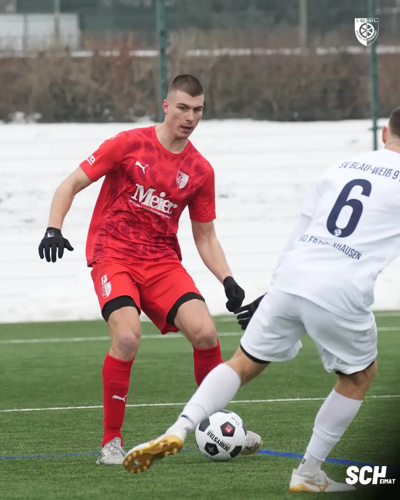
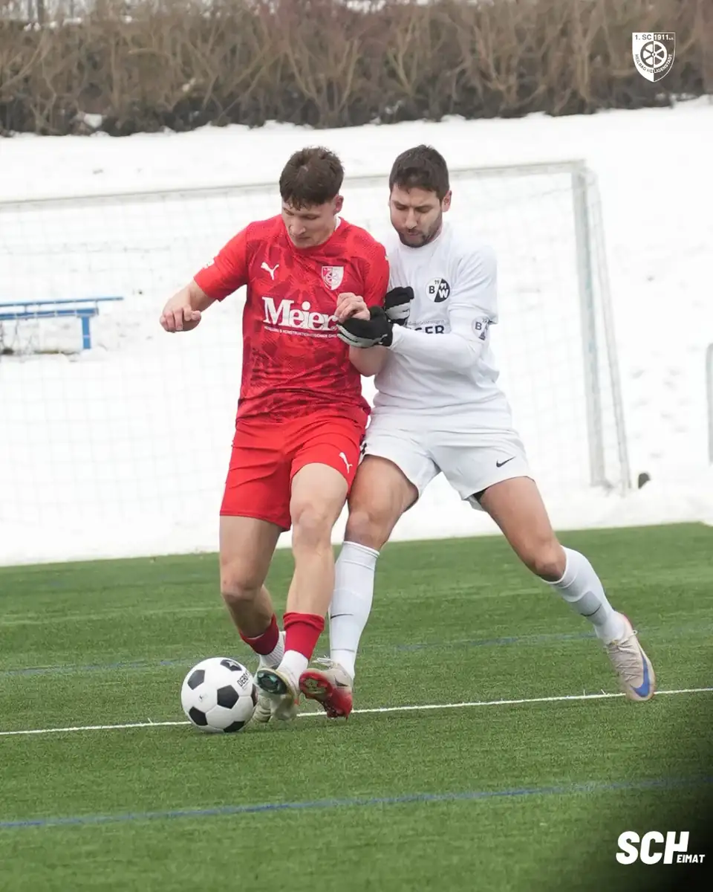
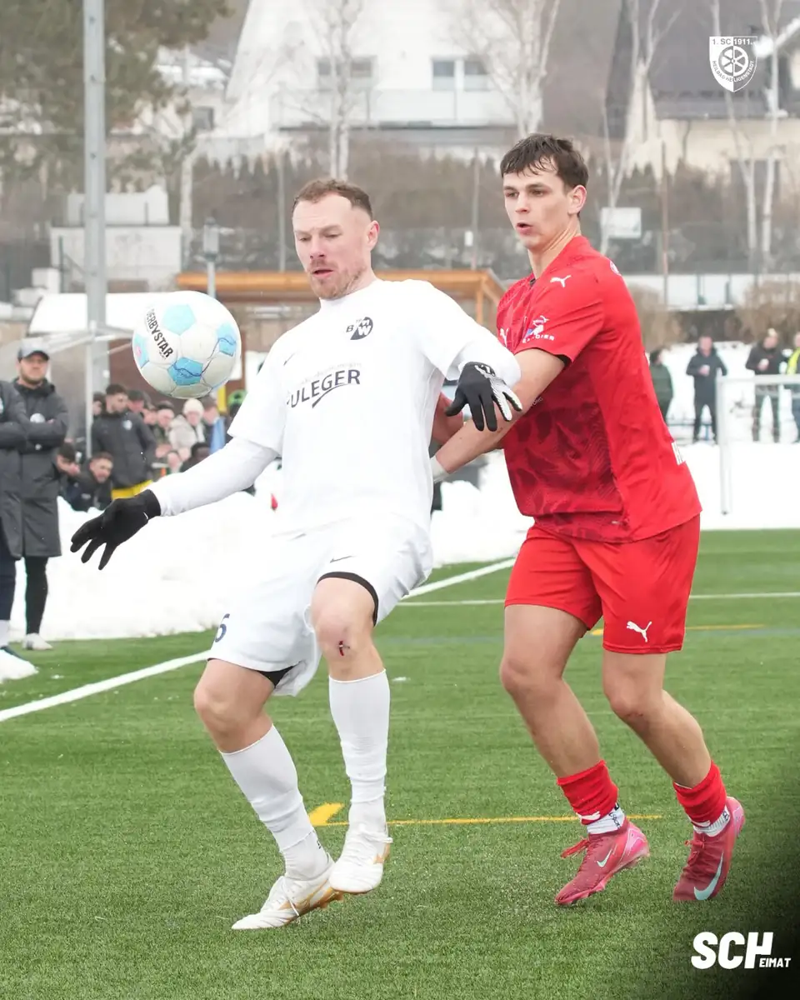
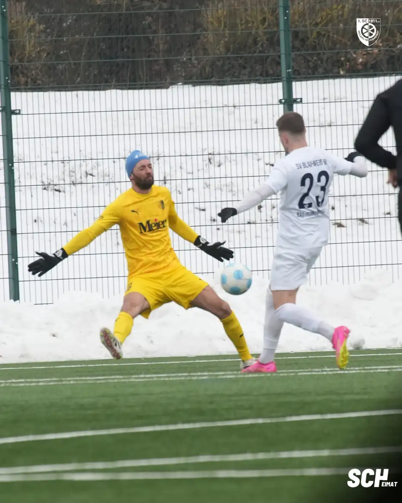
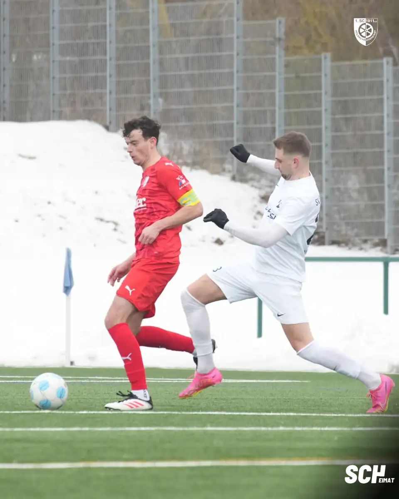
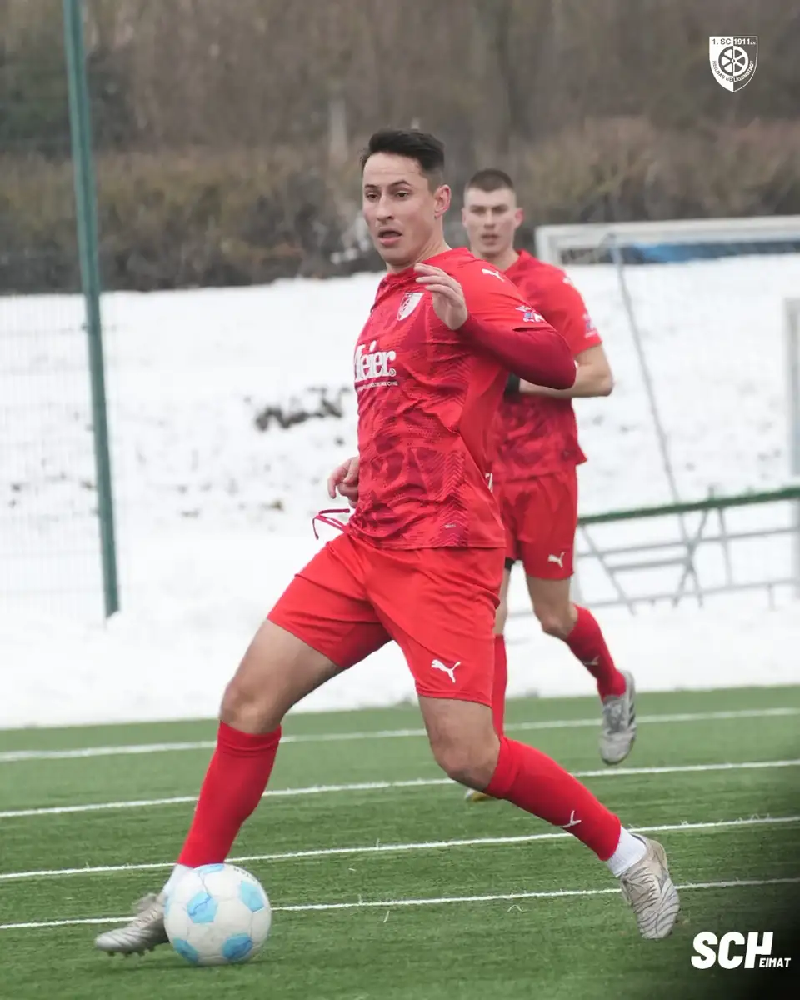
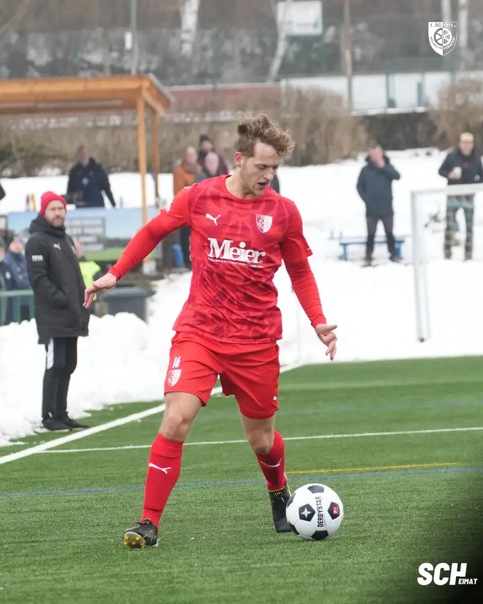
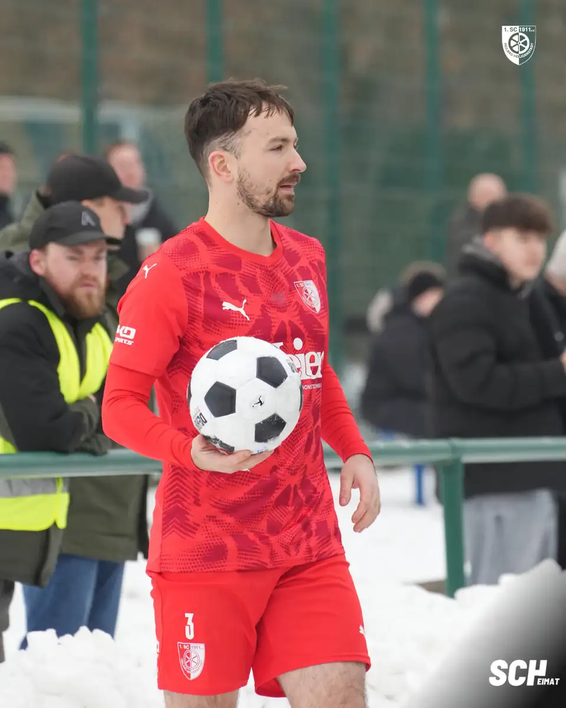
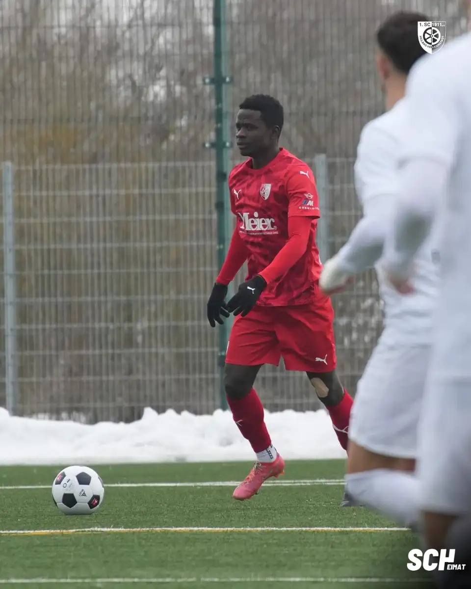
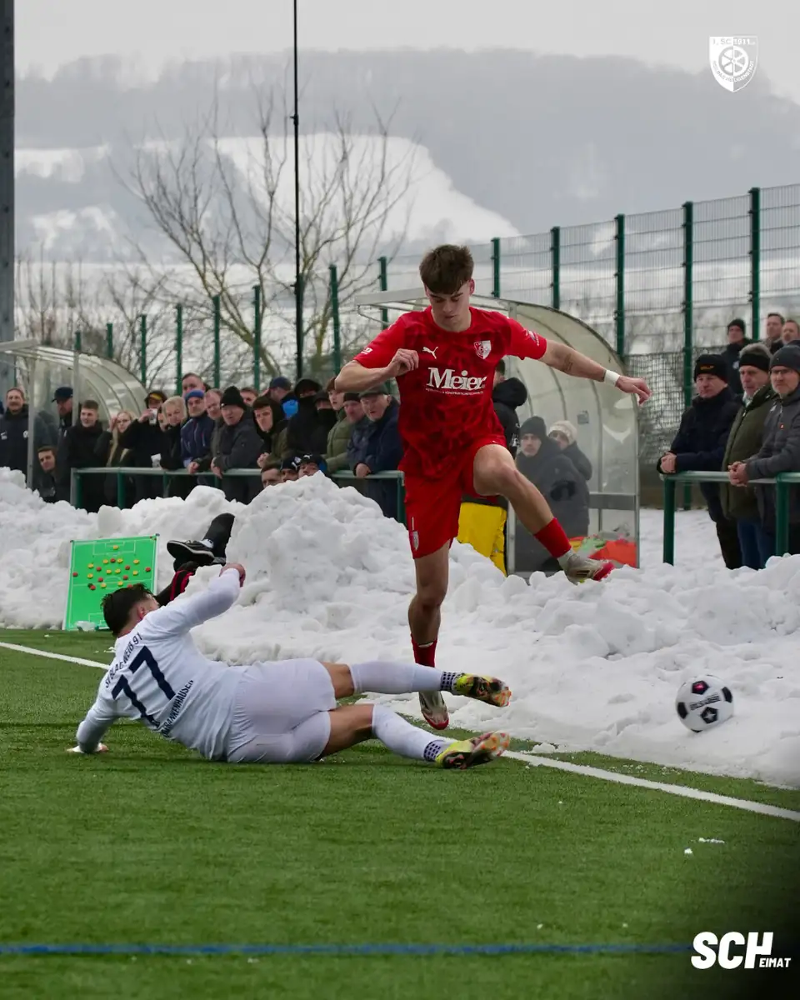
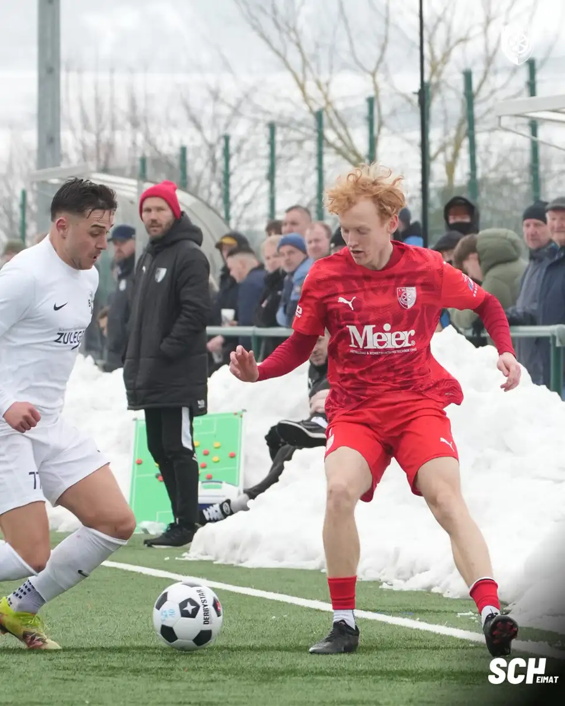